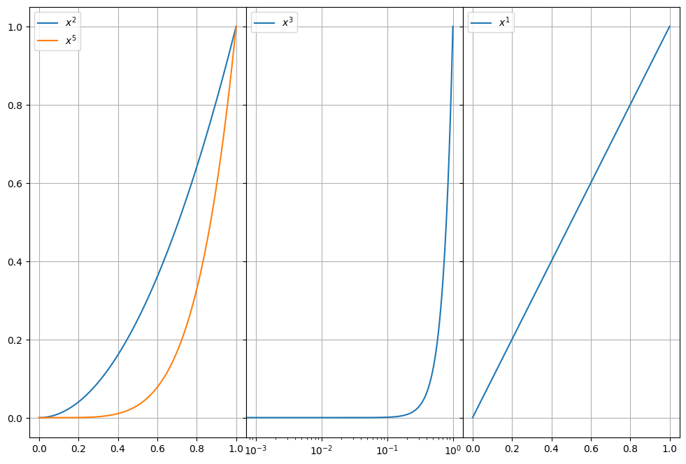
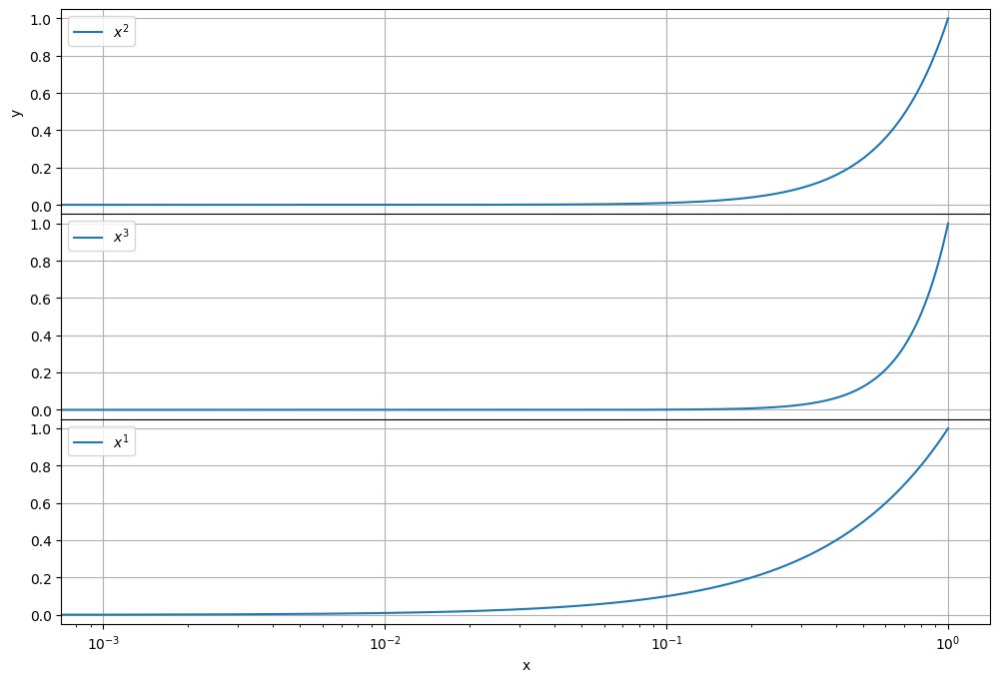

Subplot panel support
[1]:
import smpl
smpl.__version__
[1]:
'1.2.2.14'
[2]:
from smpl import plot
fig, axs = plot.subplots(1, 3, figsize=(12, 8), sharey=True)
fig.subplots_adjust(wspace=0)
plot.function(lambda x: x**2,axes=axs[0],tight=False,xmin=0,xmax=1)
plot.function(lambda x: x**5,axes=axs[0],tight=False,xmin=0,xmax=1)
plot.function(lambda x: x**3,axes=axs[1],logx=True,tight=False,xmin=0,xmax=1)
plot.function(lambda x: x**1,axes=axs[2],tight=False,xmin=0,xmax=1)

[3]:
fig, axs = plot.subplots(3, 1, figsize=(12, 8), sharex=True)
fig.subplots_adjust(hspace=0)
plot.function(lambda x: x**2,axes=axs[0],tight=False,xmin=0,xmax=1,ylabel="y")
plot.function(lambda x: x**3,axes=axs[1],logx=True,tight=False,xmin=0,xmax=1)
plot.function(lambda x: x**1,axes=axs[2],tight=False,xmin=0,xmax=1,xlabel="x")

[ ]: